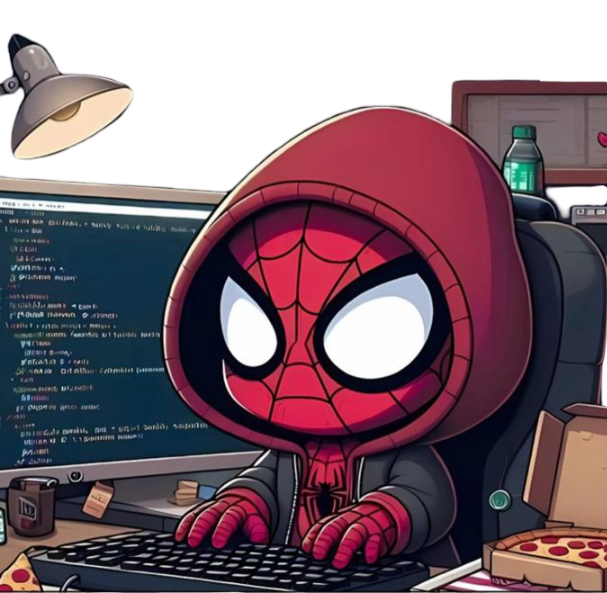

About Me
“I’m a Front-End Developer who builds fast, responsive, and user-focused web interfaces. My work revolves around writing clean, maintainable code and creating layouts that look sharp on every screen. I use HTML, CSS, JavaScript, React, and Tailwind to turn ideas into polished products that load quickly and feel smooth to use. My approach is simple: avoid clutter, focus on usability, and ship things that actually solve a problem—not just look good.”
